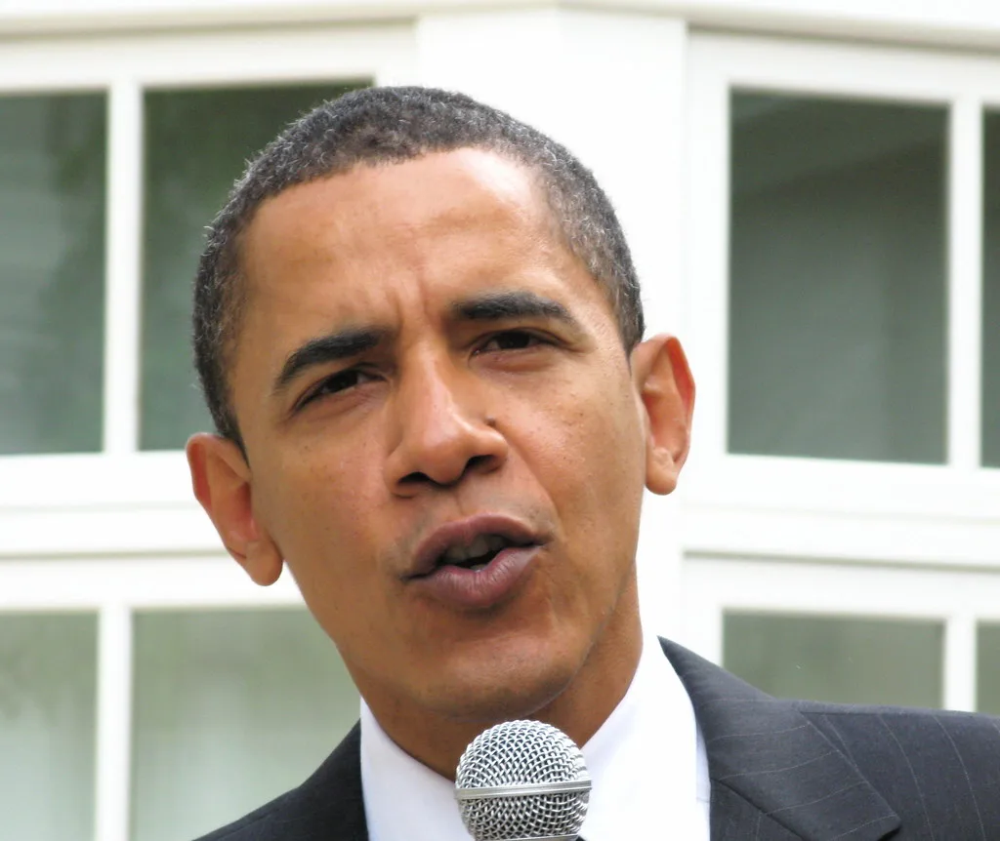
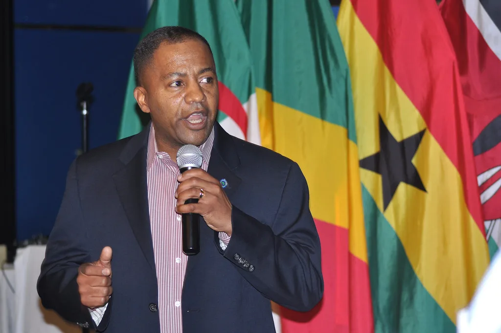

이재명 대통령, 자문회의·위원회 간담회 주재…취임 1년 성과 점검
이재명 대통령이 21일 청와대에서 대통령 소속 자문회의·위원회 간담회를 주재했다. 이날 간담회는 '함께 그리는 대한민국의 미래'라는 슬로건 아래 열렸으며, 국가적 중요 과제를 수행하는 대통령 자문회의와 대통령 소속 위원회들의 업무 현황과 향후 계획을 함께 점검하는 자리로 마련됐다. 대통령 직속 자문·위원회 기구들을 한자리에 모아 성과와 과제를 함께 짚어보는 형식의 간담회가 열린 것은 이례적이라는 평가도 나온다.
이번 간담회에는 3개 대통령 자문회의가 참석했다. 통일 정책을 자문하는 민주평화통일자문회의, 경제 분야를 다루는 국민경제자문회의, 과학기술 정책을 논의하는 국가과학기술자문회의가 자리를 함께했다. 이들 자문회의는 각 분야에서 대통령에게 직접 의견을 전달하는 역할을 맡고 있다.

대통령 소속 위원회로는 모두 16개 기구가 참석했다. 국가인공지능전략위원회와 미래국방전략위원회, 국가우주위원회 등 미래 전략 분야 위원회부터 국민생명안전위원회, 국민통합위원회, 기본사회위원회, 저출산고령사회위원회 등 사회 안전·통합 관련 위원회까지 폭넓은 분야를 아울렀다. 여기에 지방시대위원회, 경제사회노동위원회, 국가기후위기대응위원회, 국가물관리위원회, 농어업·농어촌특별위원회, 국가건축정책위원회, 규제합리화위원회, 대중문화교류위원회, 아시아문화중심도시조성위원회도 함께 참석해 각 분야의 국정과제 추진 현황을 보고했다.
이번 간담회는 이재명 정부 출범 이후 1년이 넘게 지난 시점에서, 각 자문기구와 위원회가 그간 수행한 성과를 점검하고 향후 국정 운영 방향을 재정비하려는 목적으로 풀이된다. 19개에 이르는 대통령 직속 기구를 한자리에 모아 성과를 보고받는 자리인 만큼, 정부 각 분야의 정책 추진 속도와 성과를 종합적으로 가늠해볼 수 있는 계기가 될 것으로 관측된다.

청와대는 이번 간담회가 각 기구 간 협업을 강화하고, 국민 삶과 직결되는 정책 과제들이 실질적인 성과로 이어지도록 점검하는 데 초점을 맞췄다고 설명했다. 특히 AI, 기후위기, 저출산고령화 등 범정부적 대응이 필요한 과제를 다루는 위원회들이 다수 참석한 만큼, 부처 간 칸막이를 넘어선 정책 조율 방안도 논의됐을 것으로 보인다.
같은 날 국회에서는 정무위원회를 비롯한 상임위원회들의 국정감사 종합감사가 이어지며 여야 간 공방이 예상되는 등, 정치권 전반이 분주한 하루를 보냈다. 이런 가운데 대통령이 직속 자문기구들과의 간담회를 통해 국정 운영의 중심을 다잡으려는 모습을 보인 것으로 해석된다. 최근 각종 여론조사에서 지지율이 소폭 반등세를 보인 가운데 열린 자리라, 집권 2년차 국정 운영 성과를 안팎에 재차 알리려는 행보로도 풀이된다.
전문가들은 임기 중반으로 접어드는 시점에서 이런 성과 점검 자리가 각 위원회의 존재감과 실효성을 다시 확인하는 계기가 될 수 있다고 평가한다. 다만 위원회 수가 많고 역할이 중복되는 경우도 있다는 지적이 꾸준히 제기돼 온 만큼, 향후 조직 효율화와 성과 중심의 운영 개편 논의로 이어질지도 주목된다. 특히 AI와 기후위기처럼 여러 부처와 위원회가 동시에 관여하는 과제일수록 역할 조정이 쉽지 않다는 점에서, 이번 간담회에서 나온 논의가 실제 조직 개편으로까지 이어질지는 두고 볼 대목이다.